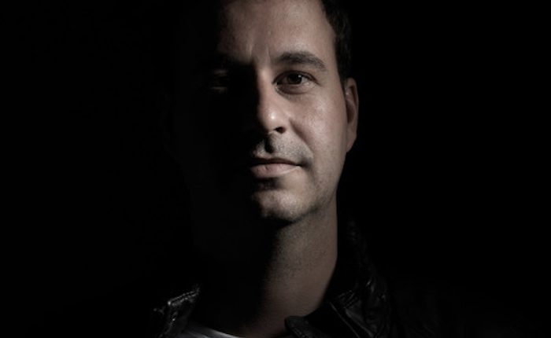

Liquid Soul on Taking the Psy Sound to the Trance Massive


Swiss psytrance favorite Liquid Soul has more than a decade under his belt as an established psy artist, though he’s stepped further into the spotlight the past few years with a real presence in the trance scene overall. He’s become a regular at Armin van Buren’s A State of Trance parties in the past few years, not to mention the Dreamstate events that have quickly become favorites for the US #trancefamily. Liquid Soul played a special Dreamstate one-off show in January, and he’s set for the massive Dreamstate San Fran show in May.
Having earned the respect and support of scene leaders like Armin van Buuren, this year Liquid Soul finds himself situated at the forefront of a new wave of psytrance that’s being embraced by the wider trance community. We checked in with him prior to Dreamstate San Francisco.
What do you think is going on at the moment with the explosion of psytrance’s popularity?
I guess nobody really knows what’s happening at the moment or where it will go, but something is happening, for sure! I guess there is a trend that sees people moving back to the underground and pure trance music, and I believe it is happening because the scene needs to recover from an overdose of commercial selling out. And wow, I was very surprised when I got contacted by Armin van Buuren to play at ASOT as the first psy artist ever. What an honor! Shortly after, Tomorrowland, Dreamstate and others followed. I was just stunned. I think it’s a natural development to make a fusion of all kinds of trance music at these events, because trance will always be trance!
Is there something in particular about your approach to psytrance that connects with those who might otherwise be into the more euphoric sounds?
I guess the connection lies in that, generally, my tracks are quite melodic, underlined with a strong bassline. They’re uplifting and have a positive vibe, but in a psychedelic way—that’s why I never go “cheesy” and keep it pure and solid as much I can. It’s important for me that my songs have a story or a catchy melody which generates a journey of body and mind each time you listen and dance to it. This type of connection to a track resonates more deeply—meaning it stays with you and you clearly remember the euphoric feeling you got from it, even after you come home from the party and listen to it again. It reconnects you to that feeling over and over.
You played a special L.A. show for Dreamstate in January. How was that?
It was absolutely blasting, and I really enjoyed it—especially because I had to cancel their previous show in L.A., due to some visa problems. It made me wonder whether this delay may have added to the crowd’s amazing energy and euphoria. Then again, it may just be because they are fantastic fans and enjoy the underground vibes!
You’ve really delivered a mix that represents you as a producer—whether it’s the strong collaborative productions or remixes for huge artists, such as Paul van Dyk. Do you feel like you’re on a healthy creative streak at the moment, in terms of your studio work?
Since the beginning of 2017, I’ve had literally no time to be in the studio, as I was on my yearly one-month vacation. Since then, I’ve had a very busy gig and tour schedule that lasts all the way until the end of April. But I always give my best, and I am looking forward to being back in my beloved studio environment to let my creativity flow. Let’s see what comes out of it.
It’s interesting to see you collaborate with veteran peak-time trance experts, like Alex MORPH. What sort of creative challenges do these collabs present for you?
I actually played his tracks about 20 years back, before I changed my sound, so I knew his sound. I felt honored to get asked to make a collab with him. But of course, it wasn’t easy at first to find the balance between my view and his own view of trance, and we went into it not knowing for certain if it will even work out at all. But I like challenges, and it’s always great to get new influences from other artists. That’s why I made so many collabs in the last 2–3 years, something I rarely did before. Since Alex had really been enjoying the psy influence lately, we found a way, and I guess we nailed it! After the release, many other trance artists contacted me to collab with them—that looks like a good sign to me!